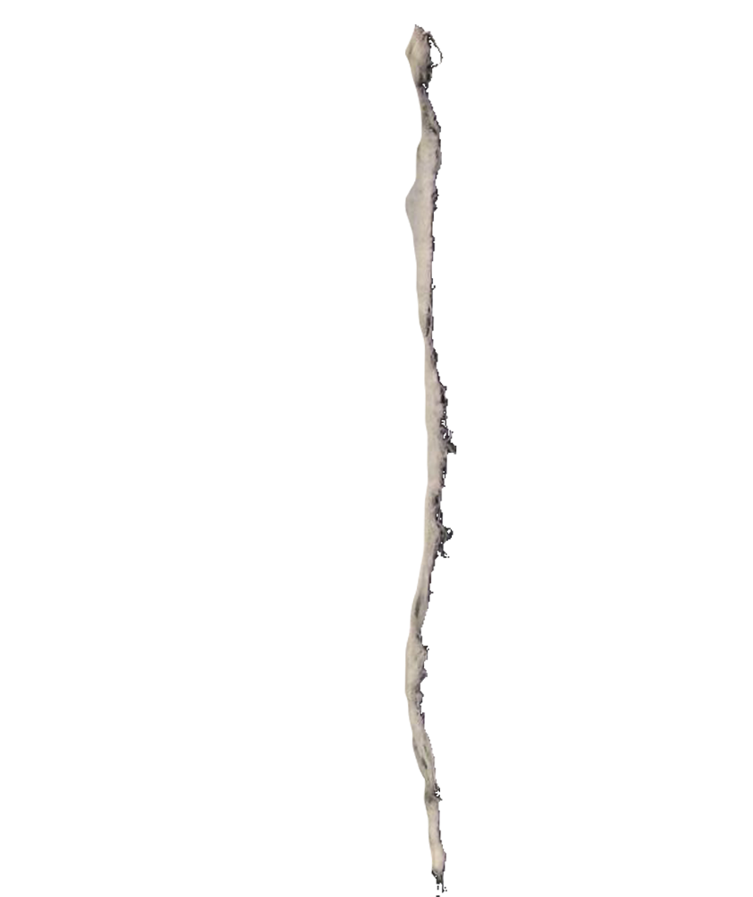
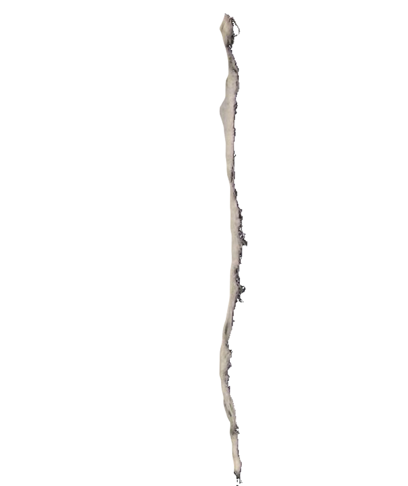

Studying abroad in London is something I’ve always looked forward to. I’d grown up hearing my dad tell stories about his time spent there. I applied to CSM for this Spring semester, but I ultimately decided against going due to COVID-19. This definitely turned out to be a blessing in disguise.
During the interim, I’ve started researching for my upcoming thesis project. I’ve been exploring the relationship between pop music and identity. While modern pop personas that explore gender identity have made major strides forward, it’s impossible to discuss their work without acknowledging the pop pioneers that came before them. This has led to much investigation into gender benders such as Bowie, the Sex Pistols, and Siouxie and the Banshees, to name a few. You may notice a common theme: all are British. In fact, it seems as though all roads of my research have been leading back to the UK. Many of my interests (past and present) related to this topic have deep roots in London. I now feel even more called to a study abroad experience at CSM.
Through this program, I hope to further my research at the site and work my way through related physical landmarks. I also believe that physically taking myself out of my creative comfort zone will do wonders for refreshing both my worldview and my work. On top of all of this, it would truly be an honor to study at an institution as prestigious as Central Saint Martin’s and connect with students and faculty there. I can’t wait to explore the city and continue my pursuit of pop!
by Sarah Kendric
Website coded with HTML/CSS. Design inspired by Sex Pistols t-shirts by Vivienne Westwood.

 
